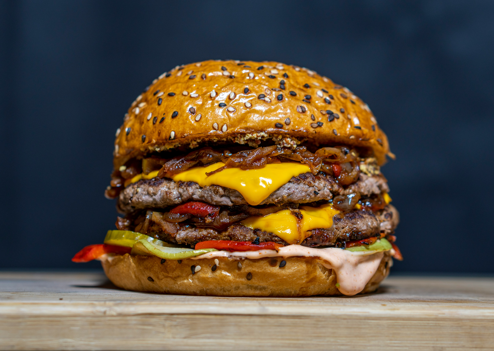

Home
Cheeseburger

Description
A cheeseburger is an all-time favorite: juicy beef patty, melted cheese, and a soft bun. Simple, satisfying, and packed with flavor. It’s the go-to meal for cookouts, quick lunches, or whenever you’re craving something hearty and delicious.
Ingredients (for 2 burgers)
- 2 burger buns
- 2 beef patties (100–150g each)
- 2 slices of cheese (like cheddar)
- Lettuce, tomato, ketchup, mustard (your call)
- Salt and pepper
- Oil or butter
Steps
- Season and cook: Season the patties with salt and pepper. Cook them in a hot pan or grill for 3–4 minutes per side.
- Add the cheese: Place a slice of cheese on each patty during the last minute of cooking. Cover to melt.
- Toast the buns: Lightly toast the inside of the buns in the pan or on the grill.
- Assemble: Stack the cheesy patty on the bun and add any toppings you like. Top with the bun and serve hot!